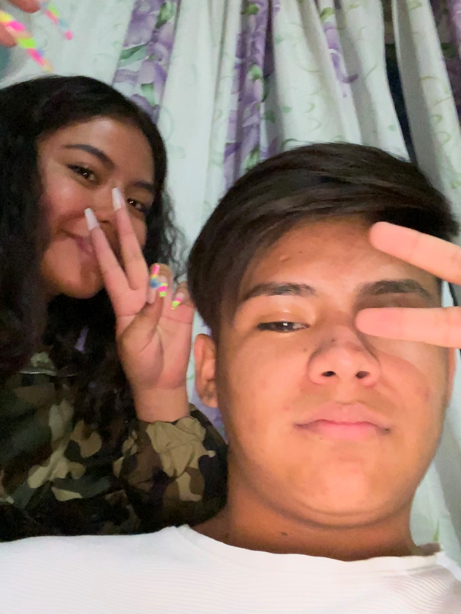
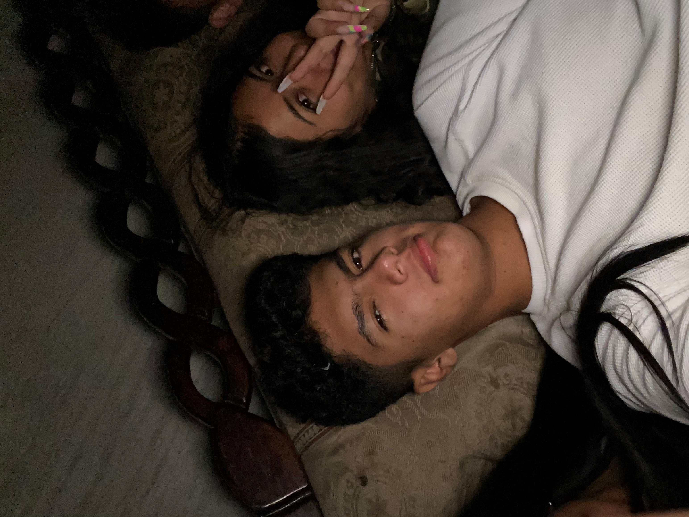
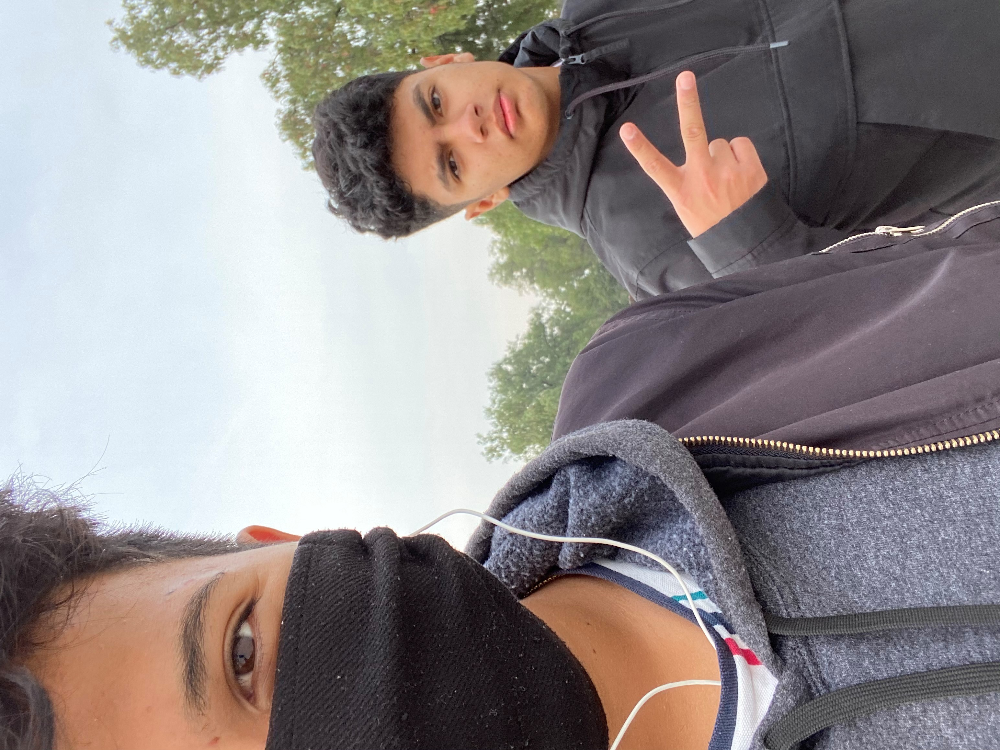
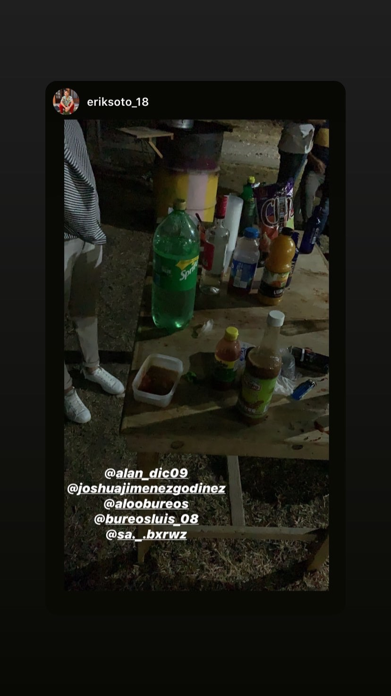
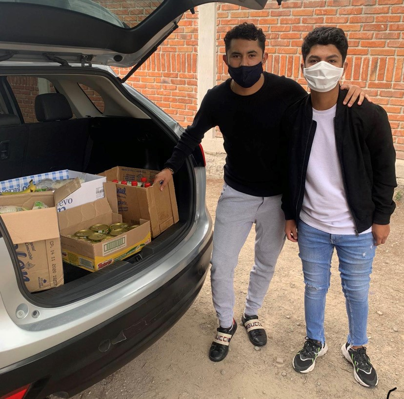
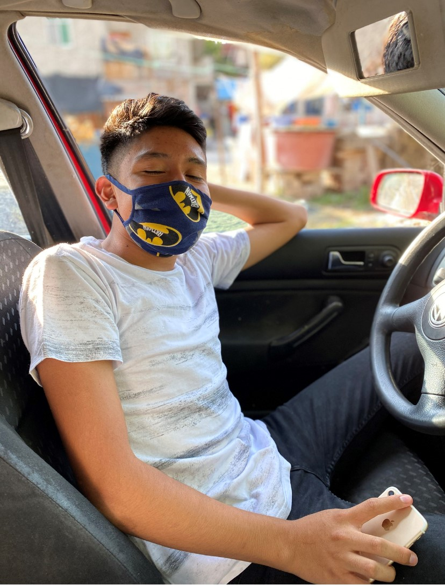

Inicio
Galeria
Aficiones
CONOCE A MIS AMIGOS
   
Mis amigos son muy importantes para mi y son personas en las que confio muchisimo y se que estaran siempre para mi
Mis Amigos
Estos son algunos de mis amigos
Estos son mis 3 mejores amigos
Erik
El es Erik, tiene 16 años, Es mi mejor amigo y o considero un hermano, el esta cuando lo necesito y hay mucha confianza entre los 2, el me apoya a mi como yo a el y esta es una de las amistades mas sinceras y puras que tengo

Jonathan
El es jonatha, lo conoci cuando jugabamos fut y desde ahi, nos empezamos a llevar super bien. Salimos casi todos los fines y siempre en las fiestas estamos juntos, el es como el hermano que siepmpre quise tener, pero mi mama no quiso darme otro hermano

"Apple"
Adair
El es Adair, lo conoci por Jonathan y me cae super bien, el me ayudo cuando unos weyes me querian pegar y el junto con sus otrso 2 amigos, me defendieron, desee ahi nos llevamos super bien y nos reunimos muy seguido en fiestas, el me ayuda en mi cuenta de free para poderla subir